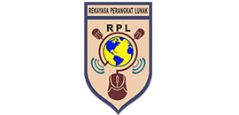

Rekayasa Perangkat Lunak

Tehnik Komputer & Jaringan

Multimedia
Singaparna – Berhasil torehkan prestasi Lomba Keterampilan Siswa (LKS) SMK Tingkat Jawa Barat 2021 salah satu siswa asal SMK YPC Tasikmalaya siap Melenggang ke tingkat Nasional. Sabtu (21/8/2021)
Setiap tanggal 2 Mei, Indonesia memperingati Hari Pendidikan Nasional atau disingkat dengan Hardiknas. Di tahun ini, Hardiknas akan jatuh pada Minggu (2/5/2021), masih di tengah situasi pandemi Covid-19 seperti tahun lalu.
Seluruh siswa SMK YPC Tasikmalaya, mengikuti pemilihan pemimpin Organisasi Siswa Intra Sekolah atau OSIS periode 2021 layaknya sistem pemilu. Pemilihan ini berlangsung di Lapang Utama SMK YPC, Selasa (26/1) pagi. Tujuannya, selain merupakan agenda program kerja tahunan pemilihan ketua osis juga memberikan pengetahuan sejak dini tentang tata cara.
Kepala SMK YPC Tasikmalaya, Drs. Ujang Sanusi, MM,. menggelar Santunan Yatim Piatu pada tahun ini meski dengan sederhana karena pandemi COVID-19. Setiap Tahun biasanya ada sekitar ratusan anak yatim yang hadir di Komplek Kampus SMK YPC Tasikmalaya, tetapi kali ini hanya sekitar 50 orang perwakilan.
elaksanaan puasa rajab 2021 dimulai 13 Februari atau 1 Rajab 1442 hijriah. Apakah Anda sudah tahu tata cara puasa rajab? Jika belum, silahkan simak penjelasan berikut ini yang memuat niat bacaan puasa rajab dan keutamaannya. Rajab merupakan bulan ketujuh dalam penanggalan hijriyah dan penanggalan Jawa.
abi Muhammad Saw mempunyai ciri-ciri yang khusus dibandingkan dengan para rasul lainnya. Diantara ciri-ciri tersebut adalah sebagai nabi penutup, penghapus risalah sebelumnya, membenarkan nabi sebelumnya, menyempurnakan risalah, diperuntukkan bagi manusia seluruh alam .
SMK YPC TASIKMALAYA adalah Sekolah Menengah Kejuruan yang memiliki kelompok bidang keahlian Ketenaga Listrikan, Audio Video, dan Teknik Komputer dan Informatika. Keberadaannya didukung oleh dunia usaha dan dunia industri, baik dalam pembelajaran maupun penyerapan lulusannya. Pembelajaran teori dan praktek tidak hanya dilakukan di dalam kelas tetapi dilakukan di dunia industri melalui praktek kerja industri di perusahaan-perusahaan yang relevan. Lulusannya telah tersebar di berbagai perguruan tinggi dan Dunia Usaha/Dunia Industri. Kesempatan untuk melanjutkan studi dan bekerja sangat terbuka luas bagi lulusannya. Jalur PMDK tersedia bagi lulusan yang berprestasi baik PN maupun Swasta. Bagi siswa yang ingin bekerja, penempatannya didukung oleh Disnaker melalui Bursa Kerja Khusus (BKK) sesuai dengan kualifikasi yang di persyaratkan oleh perusahaa, serta siswa dapat berwirausaha sesuai dengan kompetensi keahlian masing-masing.
Rekayasa Perangkat Lunak
Tehnik Komputer & Jaringan
Multimedia
Desain Pemodelan & Informasi Bangunan

Tehnik Bisnis Sepeda Motor
Tehnik Kendaraan Ringan
Tehnik Elektronika Industri